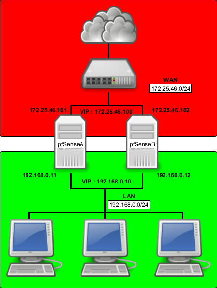
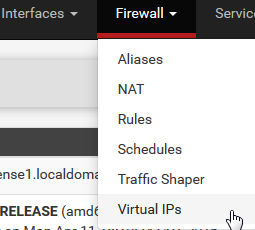
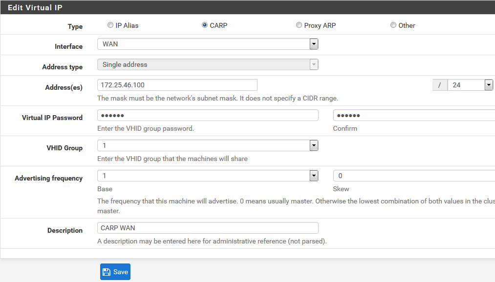
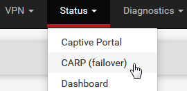
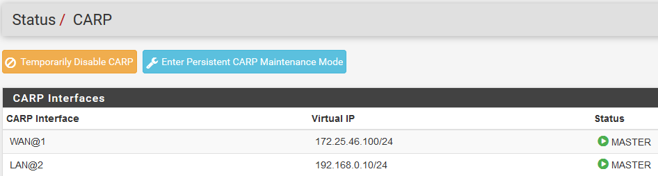
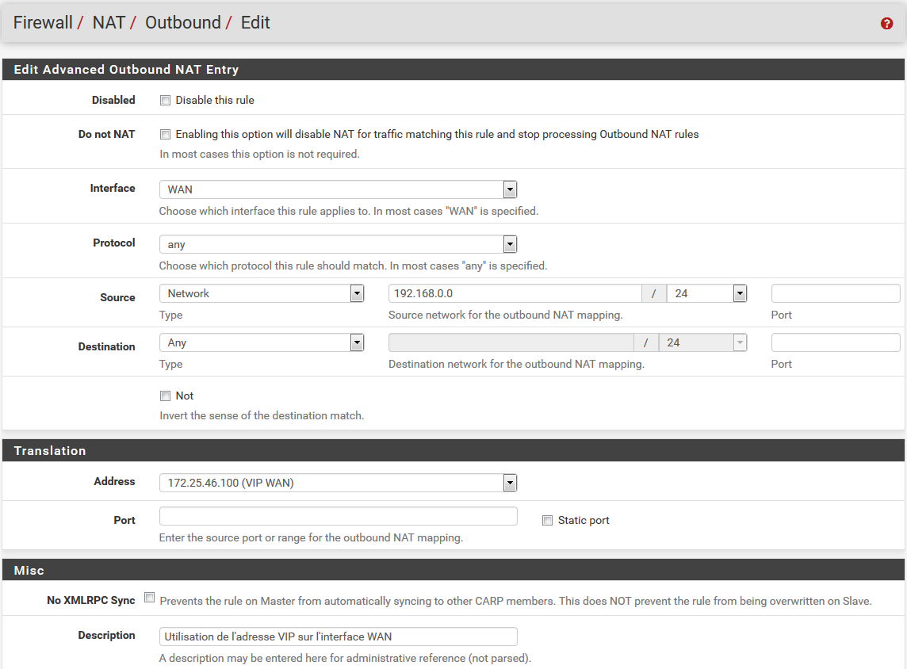
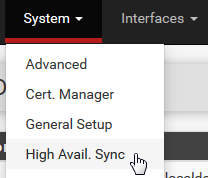
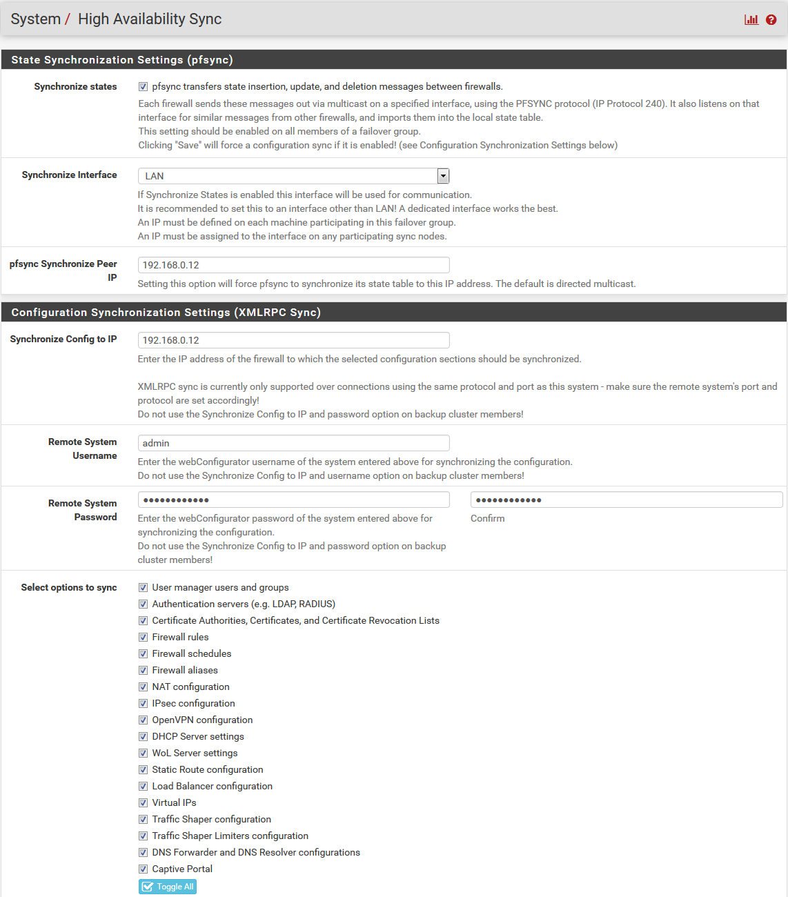
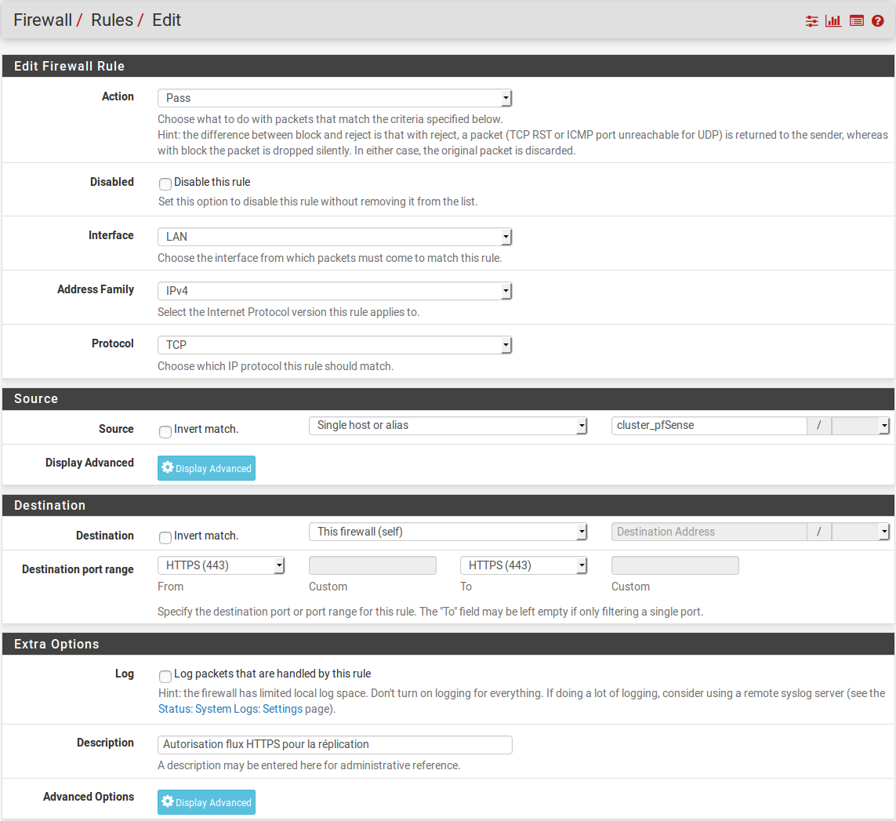
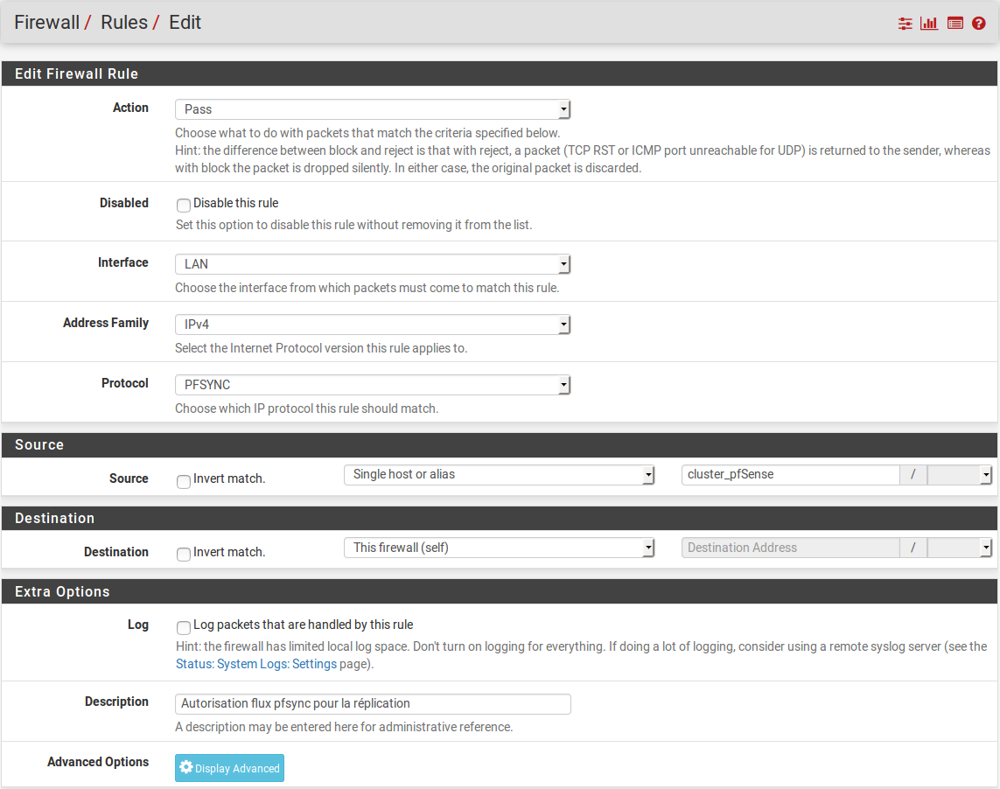

[pfSense] Configurer un cluster de 2 pfSense redondants (failover)
02/10/2019
English version: [pfSense] Configuring High Availability.
Dans cet article, nous allons voir comment configurer deux serveurs pfSense en mode cluster afin d'assurer un service en haute-disponibilité.
Il est à noter que pfSense est l'une des rares solutions open-source offrant des techniques de haute-disponibilité permettant de garantir que le firewall ne puisse pas être un point individuel de défaillance (SPOF).
Dans cet article, nous nous baserons sur l'architecture suivante pour réaliser nos configurations :
pfSense communique sur les réseaux LAN & WAN avec ses adresses IP virtuelles ; il n'utilise jamais l'adresse IP assignée à son interface.
En cas de défaillance de pfSenseA (pfSense primaire), pfSenseB (pfSense secondaire) prend le relais sans aucune interruption de service. La bascule de pfSenseA vers pfSenseB est totalement transparente.
Afin d'assurer la réplication du serveur pfSenseA vers le serveur pfSenseB, 3 éléments doivent être configurés : CARP, pfsync et XML-RPC.
CARP (Common Address Redundancy Protocol) est un protocole permettant à plusieurs hôtes présents sur un même réseau de partager une adresse IP.
Ici, nous utilisons CARP afin de partager une adresse IP WAN et une adresse IP LAN sur nos serveurs pfSense.
C'est cette adresse IP virtuelle que pfSense va utiliser pour sa communication sur le réseau. Ainsi, en cas de défaillance du pfSense primaire (pfSenseA), le pfSense secondaire (pfSenseB) prendra le relais de manière transparente au niveau réseau (reprise de l'adresse IP virtuelle).
pfsync est un protocole permettant de synchroniser entre deux serveurs pfSense l'état des connexions en cours (et de manière plus large entre deux serveurs exécutant le firewall Packet Filter). Ainsi, en cas de défaillance du serveur primaire, l'état des connexions en cours est maintenu sur le serveur secondaire. Il n'y a donc pas de coupure liée à la bascule des services du pfSenseA vers le pfSenseB.
Il est recommandé d'effectuer cette synchronisation sur un lien dédié entre les deux serveurs pfSense. À défaut, le lien LAN peut être utilisé.
La réplication peut se faire d'un serveur primaire vers un ou plusieurs autres serveur(s).
XML-RPC est un protocole permettant la réplication de données d'un serveur vers un autre. Il est utilisé dans pfSense afin de répliquer la configuration du serveur primaire vers le serveur secondaire.
Pour garantir son bon fonctionnement, il est important qu'il utilise la même interface que celle utilisée par le protocole pfsync.
Afin de fonctionner, chaque serveur pfSense doit disposer d'une adresse IP sur son interface, ainsi qu'une adresse IP virtuelle qui sera partagée entre les deux serveurs pfSense. De ce fait, nous utilisons 3 adresses IP par réseau.
Pour configurer l'adresse IP virtuelle, se rendre dans "Firewall" > "Virtual IPs" :
Cliquer sur l'icône "+ Add" pour ajouter une adresse IP virtuelle.
Les éléments à configurer sont les suivants :
Exemple de résultat obtenu :
Nous procédons à la même configuration sur l'interface LAN.
Enfin, nous réalisons les mêmes configurations sur les interfaces WAN et LAN du serveur de secours (pfSenseB), en pensant bien à passer la valeur du champ "Skew" à 1.
Nous pouvons vérifier l'état de nos adresses IP virtuelles depuis le menu "Status"> "CARP (failover)" :
Dans le cas présent, les deux adresses VIP créées ont bien le statut "master" sur le pfSenseA :
Les adresses VIP sont déclarées, mais non-utilisées. Il reste à configurer pfSense pour qu'il utilise les adresses VIP plutôt que les adresses IP attribuées à ses interfaces logiques.
Pour cela, nous devons configurer pfSense pour qu'il utilise l'adresse VIP WAN sur le trafic sortant, l'adresse VIP LAN pour le trafic entrant et configurer les différents services pour qu'ils travaillent avec l'adresse VIP LAN comme adresse par défaut (pour les configuration OpenVPN ou DHCP, par exemple).
Nous allons dans le menu Firewall > NAT. Dans l'onglet Outbound, nous cochons la case "Hybrid Outbound NAT rule generation. (Automatic Outbound NAT + rules below)".
Nous modifions les règles ou en ajoutons une afin que le trafic sortant utilise l'adresse VIP. Les champs à configurer sont les suivants :
Exemple de résultat obtenu :
Cette configuration n'est à faire que sur le pfSense primaire. La configuration sera dupliquée automatiquement sur le pfSense secondaire.
Si pfSense fait office de serveur DHCP, nous allons dans le menu "Services" > "DHCP Server". Nous modifions le champ "Gateway" pour y préciser l'adresse VIP (192.168.0.10). Autrement, le serveur DHCP de pfSense va continuer à indiquer aux clients du service DHCP l'adresse IP de l'interface LAN du pfSense.
Nous pouvons également compléter le champ "Failover peer IP" en renseignant l'adresse IP de l'interface LAN du pfSense secondaire (192.168.0.12). Cette configuration optionnelle permet de partager les leases DHCP entre le pfSense primaire et le pfSense secondaire.
Attention, si ce champ est renseigner, il est nécessaire de modifier la valeur du "skew" du pfSense secondaire pour le passer à un nombre supérieur à 20.
Davantage d'informations sur la configuration du service DHCP : [pfSense] Configurer son serveur DHCP.
Si un serveur OpenVPN est configuré sur le pfSense, il est nécessaire de modifier l'interface d'écoute du service (normalement "WAN") pour la remplacer par l'adresse VIP (172.25.46.100).
Cette modification s'opère dans "VPN" > "Servers".
Davantage d'informations sur la configuration du service OpenVPN : [pfSense] Monter un accès OpenVPN site-à-site.
Si un tunnel IPsec est configuré sur le pfSense, il est nécessaire de modifier l'interface d'écoute du VPN IPsec (normalement "WAN") pour la remplacer par l'adresse VIP (172.25.46.100).
Cette modification s'opère dans "VPN" > "IPsec". La modification s'effectue sur la phase 1.
Davantage d'informations sur la configuration du service VPN IPsec : [pfSense] Configurer un VPN IPsec site à site.
Il nous reste à configurer la haute-disponibilité. Pour cela, se rendre dans "System" > "High Avail. Sync" :
Depuis cette page, il y a 2 éléments à configurer : la partie pfsync (pour la synchronisation d'état) et XMLRPC Sync (pour la synchronisation de la configuration).
Les éléments à configurer sont les suivants :
Puis, nous choisissons les services que nous souhaitons synchroniser en cochant les cases appropriées. Par défaut, nous recommandons de tout cocher (Toggle All).
Exemple de résultat obtenu :
Il nous reste à autoriser les flux de réplications sur les firewall. La configuration se passe dans "Firewall" > "Rules".
Si la réplication se fait via l'interface LAN, les règles de firewall sont à appliquer sur cette interface ; si nous utilisons une interface dédiée, les règles seront à appliquer sur celle-ci.
Il y a deux flux réseau à autoriser :
Sur le firewall primaire, nous créons donc une première règle de firewall (en cliquant sur le bouton "Add") avec les paramètres suivants :
Exemple de résultat obtenu :
Sur le firewall primaire toujours, nous créons une seconde règle de firewall avec les paramètres suivants :
Exemple de résultat obtenu :
Ces deux règles de firewall ont été répliquées automatiquement sur le pfSense secondaire.
L'ensemble doit, à ce stade, être opérationnel. Vérifions !
Nous pouvons vérifier l'état de nos adresses IP virtuelles depuis le menu "Status"> "CARP (failover)" :
Les adresses VIP doivent avoir le statut "MASTER" sur le pfSense primaire et "BACKUP" sur le pfSense secondaire.
Nous pouvons naviguer dans le menu "Firewall" > "Rules" et "Firewall" > "NAT" et vérifier que les règles créées sur le pfSense primaire sont bien présentes également sur le pfSense secondaire.
Avant toute chose, à ce stade, il est important de faire une sauvegarde de vos serveurs pfSense ("Diagnostics" > "Backup & Restore").
Ensuite, pour tester le bon fonctionnement de la haute-disponibilité, plusieurs tests peuvent être réalisés. En voici quelques exemples :
[pfSense] Comprendre la gestion des interfaces réseaux
[pfSense] Configurer son serveur DHCP
[pfSense] Tout comprendre aux alias
[pfSense] Mettre à jour son serveur pfSense
[pfSense] Monter un accès OpenVPN site-à-site
[pfSense] Configurer un dual-WAN (plusieurs connexions Internet)
Tous nos articles classés par thème
Voir un article au hasard
Dans cet article, nous allons voir comment configurer deux serveurs pfSense en mode cluster afin d'assurer un service en haute-disponibilité.
Il est à noter que pfSense est l'une des rares solutions open-source offrant des techniques de haute-disponibilité permettant de garantir que le firewall ne puisse pas être un point individuel de défaillance (SPOF).
Dans cet article, nous nous baserons sur l'architecture suivante pour réaliser nos configurations :

pfSenseA - WAN : 172.25.46.101 pfSenseB - WAN : 172.25.46.102 @IP virtuelle - WAN : 172.25.46.100 pfSenseA - LAN : 192.168.0.11 pfSenseB - LAN : 192.168.0.12 @IP virtuelle LAN : 192.168.0.10
Principe de fonctionnement
pfSense communique sur les réseaux LAN & WAN avec ses adresses IP virtuelles ; il n'utilise jamais l'adresse IP assignée à son interface.
En cas de défaillance de pfSenseA (pfSense primaire), pfSenseB (pfSense secondaire) prend le relais sans aucune interruption de service. La bascule de pfSenseA vers pfSenseB est totalement transparente.
Afin d'assurer la réplication du serveur pfSenseA vers le serveur pfSenseB, 3 éléments doivent être configurés : CARP, pfsync et XML-RPC.
CARP
CARP (Common Address Redundancy Protocol) est un protocole permettant à plusieurs hôtes présents sur un même réseau de partager une adresse IP.
Ici, nous utilisons CARP afin de partager une adresse IP WAN et une adresse IP LAN sur nos serveurs pfSense.
C'est cette adresse IP virtuelle que pfSense va utiliser pour sa communication sur le réseau. Ainsi, en cas de défaillance du pfSense primaire (pfSenseA), le pfSense secondaire (pfSenseB) prendra le relais de manière transparente au niveau réseau (reprise de l'adresse IP virtuelle).
pfsync
pfsync est un protocole permettant de synchroniser entre deux serveurs pfSense l'état des connexions en cours (et de manière plus large entre deux serveurs exécutant le firewall Packet Filter). Ainsi, en cas de défaillance du serveur primaire, l'état des connexions en cours est maintenu sur le serveur secondaire. Il n'y a donc pas de coupure liée à la bascule des services du pfSenseA vers le pfSenseB.
Il est recommandé d'effectuer cette synchronisation sur un lien dédié entre les deux serveurs pfSense. À défaut, le lien LAN peut être utilisé.
La réplication peut se faire d'un serveur primaire vers un ou plusieurs autres serveur(s).
XML-RPC
XML-RPC est un protocole permettant la réplication de données d'un serveur vers un autre. Il est utilisé dans pfSense afin de répliquer la configuration du serveur primaire vers le serveur secondaire.
Pour garantir son bon fonctionnement, il est important qu'il utilise la même interface que celle utilisée par le protocole pfsync.
1. Configurer les adresses IP virtuelles
Afin de fonctionner, chaque serveur pfSense doit disposer d'une adresse IP sur son interface, ainsi qu'une adresse IP virtuelle qui sera partagée entre les deux serveurs pfSense. De ce fait, nous utilisons 3 adresses IP par réseau.
Pour configurer l'adresse IP virtuelle, se rendre dans "Firewall" > "Virtual IPs" :

Cliquer sur l'icône "+ Add" pour ajouter une adresse IP virtuelle.
Les éléments à configurer sont les suivants :
- Type : ici, nous avons quatre possibilités :
- IP Alias
- CARP
- Proxy ARP
- Other
- Interface : l'interface sur laquelle la VIP doit être configurée. Nous configurons la première sur l'interface WAN, puis la seconde sur l'interface LAN.
- Address(es) : l'adresse VIP et le masque du subnet de l'interface. Dans notre exemple : 172.25.46.100 et /24
- Virtual IP Password : mot de passe permettant de sécuriser les échanges au sein du groupe d'hôtes se partageant la VIP. Ce mot de passe devra être re-saisi sur le pfSense secondaire.
- VHID Group : Virtual Host Identifier. Un serveur peut faire parti de plusieurs groupes de VIP. Afin d'identifier chaque groupe, un ID unique lui est assigné. Nous laissons la valeur par défaut.
- Advertising Frequency : la valeur du champ "Skew" à 0 désigne le master (pfSense primaire). Une valeur plus élevée désignera l'esclave (pfSense de secours). La valeur de "Base" correspond au timeout en seconde au bout duquel l'hôte sera considéré comme inaccessible. Nous recommandons de laisser la valeur par défaut : 1.
Exemple de résultat obtenu :

Nous procédons à la même configuration sur l'interface LAN.
Enfin, nous réalisons les mêmes configurations sur les interfaces WAN et LAN du serveur de secours (pfSenseB), en pensant bien à passer la valeur du champ "Skew" à 1.
Nous pouvons vérifier l'état de nos adresses IP virtuelles depuis le menu "Status"> "CARP (failover)" :

Dans le cas présent, les deux adresses VIP créées ont bien le statut "master" sur le pfSenseA :

2. Forcer l'utilisation des adresses IP virtuelles
Les adresses VIP sont déclarées, mais non-utilisées. Il reste à configurer pfSense pour qu'il utilise les adresses VIP plutôt que les adresses IP attribuées à ses interfaces logiques.
Pour cela, nous devons configurer pfSense pour qu'il utilise l'adresse VIP WAN sur le trafic sortant, l'adresse VIP LAN pour le trafic entrant et configurer les différents services pour qu'ils travaillent avec l'adresse VIP LAN comme adresse par défaut (pour les configuration OpenVPN ou DHCP, par exemple).
Configuration du NAT
Nous allons dans le menu Firewall > NAT. Dans l'onglet Outbound, nous cochons la case "Hybrid Outbound NAT rule generation. (Automatic Outbound NAT + rules below)".
Nous modifions les règles ou en ajoutons une afin que le trafic sortant utilise l'adresse VIP. Les champs à configurer sont les suivants :
- Disabled : cocher cette case pour désactiver la règle sans devoir la supprimer.
- Do not NAT : cocher cette case permet de désactiver le NAT pour le trafic correspondant à cette règle. Il est très rare de devoir cocher cette case.
- Interface : l'interface logique sur laquelle nous souhaitons définir notre règle de NAT. Dans notre cas, nous choisissons "WAN".
- Protocol : les protocoles concernés par cette règle de NAT. Nous choisissons "any"
- Source : le réseau source. Dans notre cas, il s'agit du réseau local, nous saisissons donc "192.168.0.0" et "/24" pour le masque.
- Destination : le réseau de destination. Dans notre cas, nous choisissons "any".
- Address : l'adresse à utiliser lors du NAT. Nous choisissons l'adresse VIP créée précédemment, soit "172.25.46.100 (VIP WAN)".
- Port : nous laissons ce champ vide.
- No XMLRPC Sync : cocher cette case pour ne pas copier la règle sur le pfSense secondaire. Nous laissons cette case non-cochée.
- Description : un champ informatif
Exemple de résultat obtenu :

Cette configuration n'est à faire que sur le pfSense primaire. La configuration sera dupliquée automatiquement sur le pfSense secondaire.
Configuration du service DHCP
Si pfSense fait office de serveur DHCP, nous allons dans le menu "Services" > "DHCP Server". Nous modifions le champ "Gateway" pour y préciser l'adresse VIP (192.168.0.10). Autrement, le serveur DHCP de pfSense va continuer à indiquer aux clients du service DHCP l'adresse IP de l'interface LAN du pfSense.
Nous pouvons également compléter le champ "Failover peer IP" en renseignant l'adresse IP de l'interface LAN du pfSense secondaire (192.168.0.12). Cette configuration optionnelle permet de partager les leases DHCP entre le pfSense primaire et le pfSense secondaire.
Attention, si ce champ est renseigner, il est nécessaire de modifier la valeur du "skew" du pfSense secondaire pour le passer à un nombre supérieur à 20.
Davantage d'informations sur la configuration du service DHCP : [pfSense] Configurer son serveur DHCP.
Configuration du service OpenVPN server
Si un serveur OpenVPN est configuré sur le pfSense, il est nécessaire de modifier l'interface d'écoute du service (normalement "WAN") pour la remplacer par l'adresse VIP (172.25.46.100).
Cette modification s'opère dans "VPN" > "Servers".
Davantage d'informations sur la configuration du service OpenVPN : [pfSense] Monter un accès OpenVPN site-à-site.
Configuration du service VPN IPsec
Si un tunnel IPsec est configuré sur le pfSense, il est nécessaire de modifier l'interface d'écoute du VPN IPsec (normalement "WAN") pour la remplacer par l'adresse VIP (172.25.46.100).
Cette modification s'opère dans "VPN" > "IPsec". La modification s'effectue sur la phase 1.
Davantage d'informations sur la configuration du service VPN IPsec : [pfSense] Configurer un VPN IPsec site à site.
3. Configurer la haute-disponibilité
Il nous reste à configurer la haute-disponibilité. Pour cela, se rendre dans "System" > "High Avail. Sync" :

Depuis cette page, il y a 2 éléments à configurer : la partie pfsync (pour la synchronisation d'état) et XMLRPC Sync (pour la synchronisation de la configuration).
State Synchronization Settings (pfsync)
Les éléments à configurer sont les suivants :
- Synchronize States : cocher cette case pour activer pfsync (cette configuration est à faire sur le pfSense primaire et sur le pfSense secondaire)
- Synchronize Interface : l'interface de synchronisation. Si nous disposons d'une interface dédiée à la synchronisation, nous la choisissons ; autrement, nous choisissons "LAN".
- pfsync Synchronize Peer IP : sur le pfSense primaire, saisir l'adresse IP du serveur pfSense de secours (192.168.0.12). Si pour le choix de l'interface (ci-dessus) nous avons choisi "LAN", nous indiquons l'adresse IP de l'interface LAN du pfSense secondaire (192.168.0.12) ; si nous avons choisi une interface dédiée alors nous indiquons l'adresse IP de l'interface dédiée du pfSense secondaire. Par défaut, si aucune adresse IP n'est saisie, pfSense diffusera en multicast sur l'interface choisie préalablement. Sur le pfSense secondaire, on indique l'adresse IP du pfSense primaire (192.168.0.11)
Configuration Synchronization Settings (XMLRPC Sync)
- Synchronize Config to IP : sur le serveur pfSense primaire, saisir l'adresse IP du serveur pfSense secondaire (comme précédemment, il faut saisir l'adresse IP de l'interface choisie). Ce doit être la même adresse IP que celle renseignée dans le champ "pfsync Synchronize Peer IP". Ce champ doit être laissé vide sur le serveur pfSense secondaire.
- Remote System Username : sur le serveur pfSense primaire, saisir le nom d'utilisateur utilisé pour se connecter sur le WebGUI du pfSense de secours ("admin" par défaut). Ce champ doit être laissé vide sur le serveur pfSense de secours.
- Remote System Password : sur le serveur pfSense primaire, saisir le mot de passe du compte utilisateur saisi ci-dessus. Ce champ doit être laissé vide sur le serveur pfSense de secours.
Puis, nous choisissons les services que nous souhaitons synchroniser en cochant les cases appropriées. Par défaut, nous recommandons de tout cocher (Toggle All).
Exemple de résultat obtenu :

Autoriser les flux de réplication au niveau des règles du firewall
Il nous reste à autoriser les flux de réplications sur les firewall. La configuration se passe dans "Firewall" > "Rules".
Si la réplication se fait via l'interface LAN, les règles de firewall sont à appliquer sur cette interface ; si nous utilisons une interface dédiée, les règles seront à appliquer sur celle-ci.
Il y a deux flux réseau à autoriser :
- le flux pour la synchronisation XML-RPC qui s'effectue via le port 443
- le flux pour la synchronisation du protocole pfsync
Sur le firewall primaire, nous créons donc une première règle de firewall (en cliquant sur le bouton "Add") avec les paramètres suivants :
- Action : nous choisissons "Pass"
- Interface : nous choisissons l'interface dédiée à la réplication si le pfSense en possède une. Autrement, nous choisissons "LAN"
- Address Family : nous laissons "IPv4"
- Protocol : nous choisissons "TCP"
- Source : nous indiquons un alias qui contiendra les adresses IP des interfaces de synchronisation de chaque pfSense (dans notre cas, cet alias contiendra les adresses IP "192.168.0.11" et "192.168.0.12"). Si cette notion d'alias n'est pas claire pour vous, vous pouvez consulter notre article dédié [pfSense] Tout comprendre aux alias, ou vous pouvez choisir l'ensemble du réseau rattaché à l'interface de synchronisation (dans notre cas, ce serait "LAN net")
- Destination : nous choisissons "This firewall (self)"
- Destination port range : choisir "HTTPS (443)"
Exemple de résultat obtenu :

Sur le firewall primaire toujours, nous créons une seconde règle de firewall avec les paramètres suivants :
- Action : nous choisissons "Pass"
- Interface : nous choisissons l'interface dédiée à la réplication si le pfSense en possède une. Autrement, nous choisissons "LAN"
- Address Family : nous laissons "IPv4"
- Protocol : nous choisissons "PFSYNC"
- Source : nous indiquons un alias qui contiendra les adresses IP des interfaces de synchronisation de chaque pfSense (dans notre cas, cet alias contiendra les adresses IP "192.168.0.11" et "192.168.0.12"). Si cette notion d'alias n'est pas claire pour vous, vous pouvez choisir l'ensemble du réseau rattaché à l'interface de synchronisation (dans notre cas, ce serait "LAN net")
- Destination : nous choisissons "This firewall (self)"
Exemple de résultat obtenu :

Ces deux règles de firewall ont été répliquées automatiquement sur le pfSense secondaire.
4. Vérifier le bon fonctionnement de la haute-disponibilité
L'ensemble doit, à ce stade, être opérationnel. Vérifions !
Vérifier le statut du CARP (adresse VIP)
Nous pouvons vérifier l'état de nos adresses IP virtuelles depuis le menu "Status"> "CARP (failover)" :
Les adresses VIP doivent avoir le statut "MASTER" sur le pfSense primaire et "BACKUP" sur le pfSense secondaire.
Vérifier la réplication
Nous pouvons naviguer dans le menu "Firewall" > "Rules" et "Firewall" > "NAT" et vérifier que les règles créées sur le pfSense primaire sont bien présentes également sur le pfSense secondaire.
Faire des tests !
Avant toute chose, à ce stade, il est important de faire une sauvegarde de vos serveurs pfSense ("Diagnostics" > "Backup & Restore").
Ensuite, pour tester le bon fonctionnement de la haute-disponibilité, plusieurs tests peuvent être réalisés. En voici quelques exemples :
- arrêter le pfSense primaire
- débrancher le câble réseau de l'interface LAN ou WAN du pfSense primaire
- désactiver le service CARP sur le pfSense primaire ("Status" > "CARP (failover)")
- télécharger un fichier ou lancer des requêtes ping lors de la bascule du primaire vers le secondaire
Pour aller plus loin
[pfSense] Comprendre la gestion des interfaces réseaux
[pfSense] Configurer son serveur DHCP
[pfSense] Tout comprendre aux alias
[pfSense] Mettre à jour son serveur pfSense
[pfSense] Monter un accès OpenVPN site-à-site
[pfSense] Configurer un dual-WAN (plusieurs connexions Internet)
Tous nos articles classés par thème
Voir un article au hasard